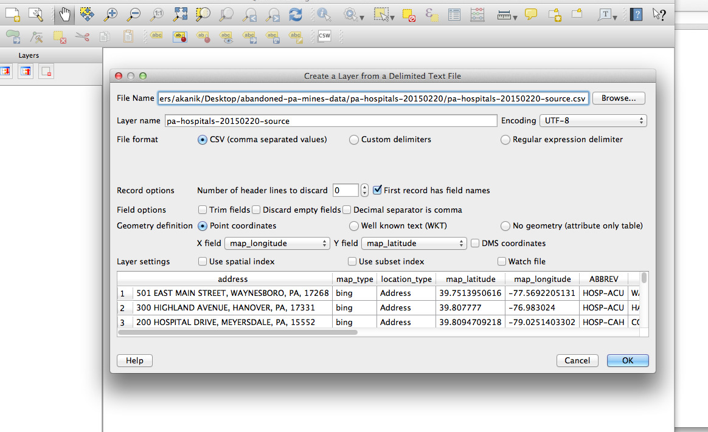

Adding features
 Vector layer
Vector layer
 Raster layer
Raster layer
 Delimited text layer
Delimited text layer
What is a .qgs file?
When you save a map file, it will save as a .qgs. This file is a configuration file. It basically just references the files that you load into QGIS. IT DOES NOT HOLD ANY OF YOUR DATA. This means if you move the shapefiles you load into your map after you save it, your map will break.
So dedicate a folder to each map you work on. Put your shapefiles and your map file in there and don't move them around.
This might seem like a weird, crappy way to organize things. But it's not. And here's why.
QGIS isn't perfect. Sometimes it exhibits behavior that neither you nor the message forums can explain. So your only recourse is to shut 'er down and reopen the program.
And sometimes, that doesn't work either. So you need to scrap your map file.
Now, if all of your work depended on that one .qgs file, that would suck hardcore. But since your shapefiles and data are separate files, and since you've taken crazy good process notes, you're totally fine.
What is a shapefile?
A shapefile is the most common vector feature type. It is comprised of a series of other files including:
- .shp - the feature geometry
- .shx - positioning index of the feature geometry
- .dbf - the data attributes for the features. This can be opened with editors like excel.
- .prj - projection file. This can also be opened and analyzed. Especially if you're having projection issues.
Naming your files and taking mad notes
There are going to be projects you work on that will require you to slice and dice a shapefile in many different ways. You need to be careful what you name each file so you aren't analyzing old shapefiles.
I would strongly recommend taking detailed notes about how you change shapefiles so you can return to the notes in case you lose track of which file is which, or if something goes wrong and you need to diagnose a problem.

What is a projection?
So the earth is round, right? Turns out it's not the easiest thing to make something round and three-dimensional look flat. But to hell if we don't try.
That's basically what projections are, flat representations of our round world. Lots of people have taken a stab at making the best projection, but not all projections are created equal.
Depending on the scope and span of your data, you may want to stick to a more local, granular projection. But if you're trying to show the whole world things are going to get a little wonky at some point.
Mapping projections from the 1936 Oxford Advanced Atlas compiled by John Bartholomew, cartographer to His Majesty the King


Demo
In this demo, we're going to be creating a map that overlays Pennsylvania hospitals and nursing homes with abandoned mine data.
This is a blank map.
The working directory
- Download the data
- Choose your working directory, and stick with it
A working directory is a place on your computer where you house all of your map shapefiles. Once a shapefile is added to the working directory, it should not be moved around because that can break the file path and therefore your map.
In the example above, abandoned-pa-mines-data is the working directory.
This is what you'll see if you move layers and map files around

Adding data
We're going to be focusing on VECTOR LAYERS and DELIMITED TEXT LAYERS. These are the layers you will use most often.
Adding vectors
- Click the vector layer button
- Navigate to your working directory
- Add
tl_2014_42_county-->tl_2014_42_county.shp - Add
aml_inve-->aml_inve.shp - Add
pa-nursing-homes-20150220-->pa-nursing-homes-20150220-shp-->pa-nursing-homes-20150220.shp
Adding delimited text layers
- Click the delimited text layer button
- Navigate to your working directory
- Add the
pa-hospitals-20150220folder -->pa-hospitals-20150220-source.csv
Write this down:
Latitude = Y
Longitude = X
The difference between map projection and layer projection
On-the-fly projecting
NOTE: On-the-fly projecting does NOT change your shapefile's projection.


Changing a shapefile's projection
- Right-click the layer you'd like to change
- Select "Save as"
Styling
- Right-click or double-click the layer
- Select the Style tab
- Style accordingly
Selecting by location
Now we want to take a look at only those hospitals or nursing homes that sit on top of abandoned mines.
- Navigate to the Vector menu > Research tools > Select by location
- Select features in = the shapefile you want to refine
- That intersect features in = the shapefile that will determine which features are selected, the intersect layer
- Right-click layer and select "Save as"
- Follow normal saving procedures, but make sure to check the "Save only selected features" box
- You probably want to add this file to the map after it's created, so check "Add saved file to map" also
Analyzing the attribute table
There are a couple of ways to analyze a selection once you've created and saved it.
- Right-click the layer and choose "Open Attribute Table"
- Navigate to where the layer is stored in your working directory and open the .dbf file with an editor like excel or libreoffice